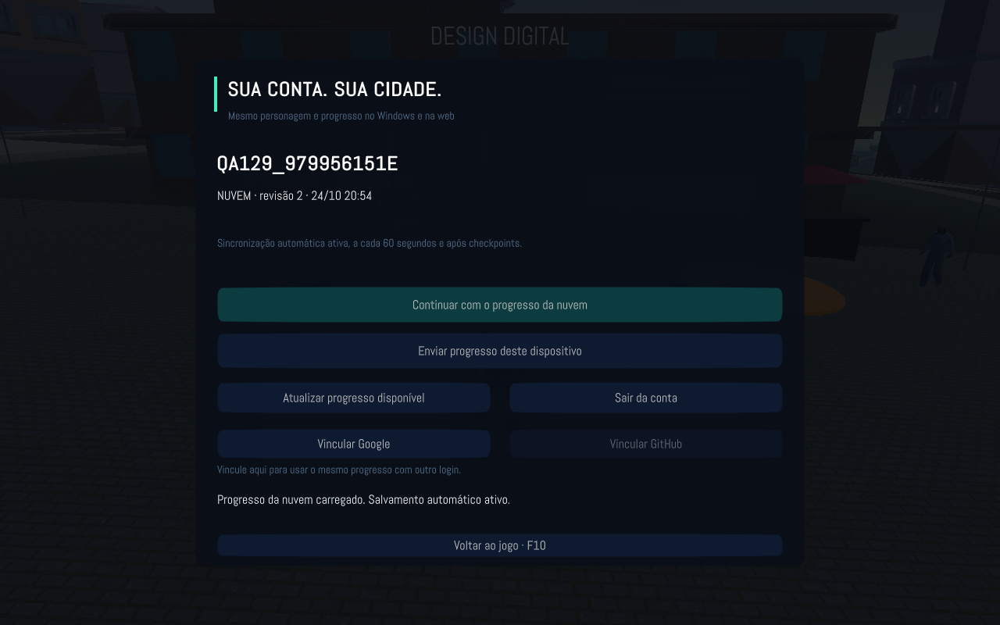
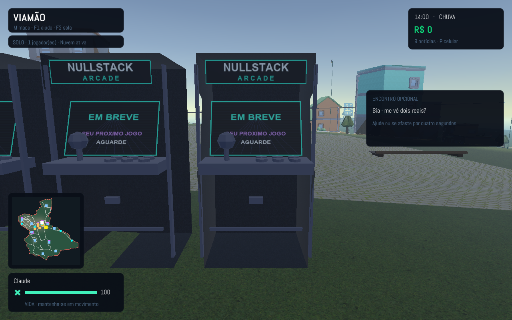
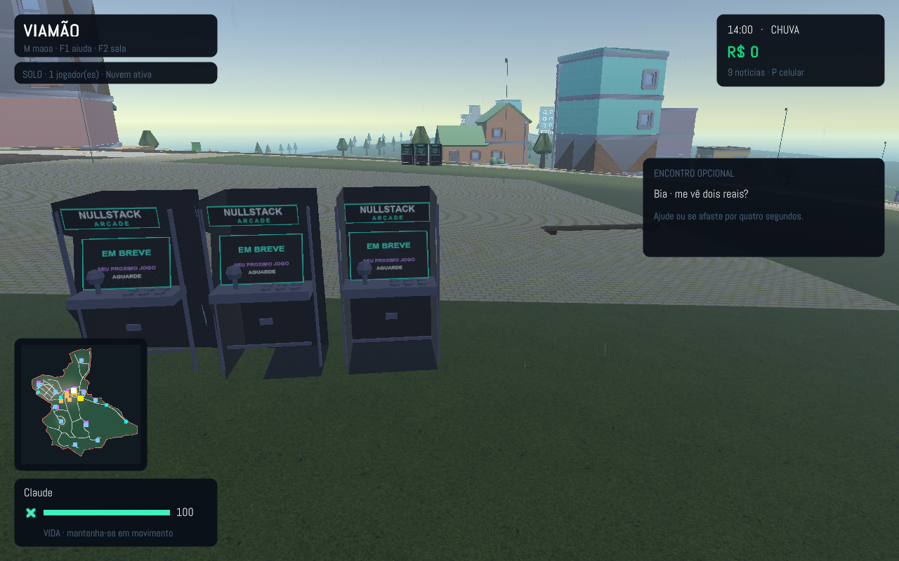
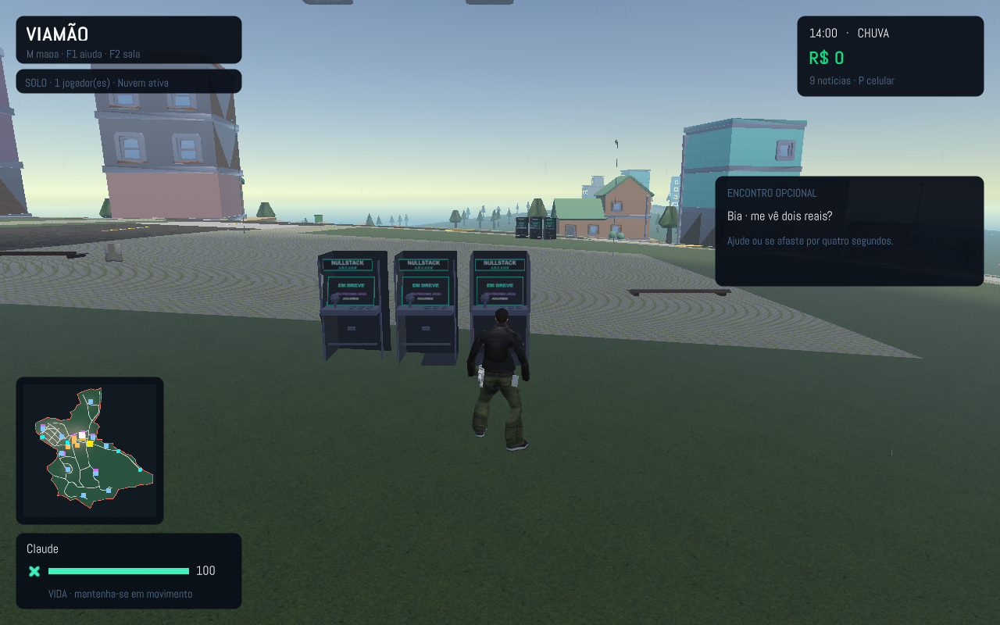
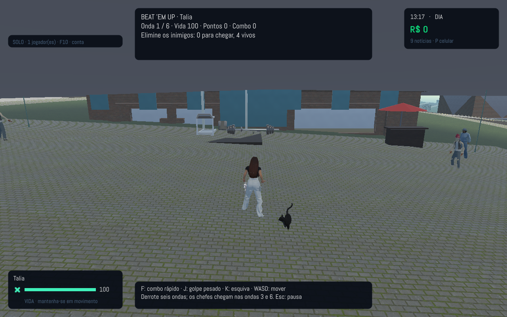
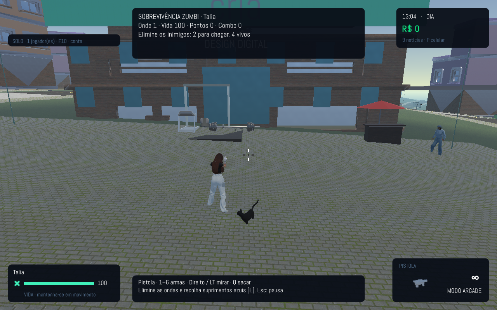

Login conectado · 1.30.0
Google/OAuth, segurança e otimizações dos modos arcade.

Nuvem · conta-nuvem
Nuvem · fliperama-detalhe
Nuvem · fliperamas-local
Nuvem · hud-129
Arcade · beat-em-up
Arcade · zumbi